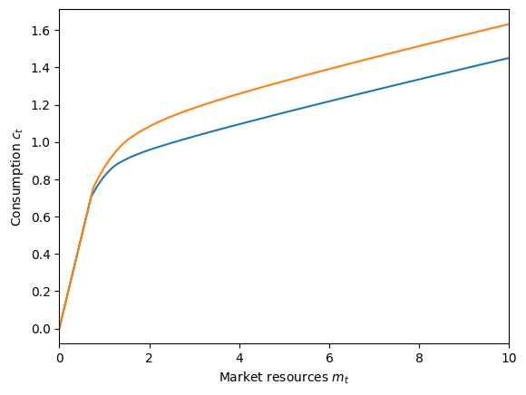
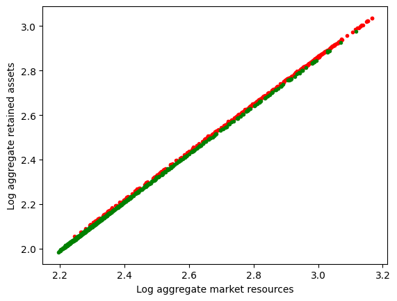
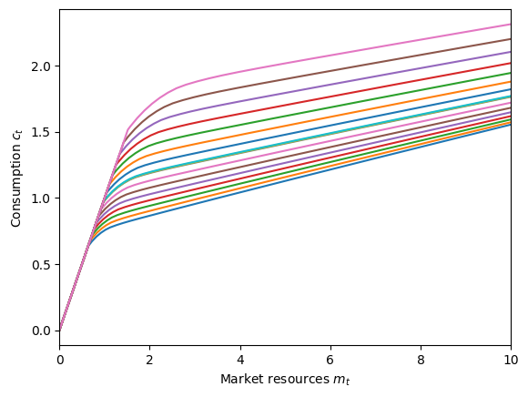
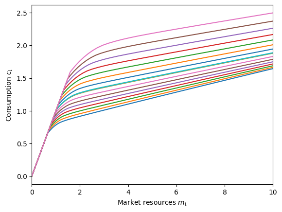

Interactive online version:
Aggregate Productivity Shocks with a Discrete State#
This notebook concerns AggShockMarkovConsumerType, an extension of AggShockConsumerType that incorporates a discrete state at the aggregate (market) level. For the basic version of the aggregate productivity shocks model, see this notebook.
[1]:
from time import time
import matplotlib.pyplot as plt
import numpy as np
from HARK.ConsumptionSaving.ConsAggShockModel import (
AggShockMarkovConsumerType,
CobbDouglasMarkovEconomy,
SmallOpenMarkovEconomy,
)
from HARK.utilities import plot_funcs, plot_func_slices
def mystr(number):
return f"{number:.4f}"
Microeconomic model statement for AggShockMarkovConsumerType#
Agents in this model have a similar problem to AggShockConsumerType, but also have a discrete state \(z_t\) that evolves at the aggregate level– all consumers share the same \(z_t\). Just like for a MarkovConsumerType, agents’ idiosyncratic income shock distribution can vary by \(z_t\), as can the distribution of aggregate productivity shocks and the growth rate of aggregate productivity.
The microeconomic optimization problem can be written as:
\begin{eqnarray*} \text{v}(m_{it}, M_t, z_t) &=& \max_{c_{it}} \frac{c_{it}^{1-\rho}}{1-\rho} + \beta \mathsf{S} \mathbb{E} \left[ (\psi_{it+1} \Psi_{t+1})^{1-\rho} \text{v}(m_{it+1}, M_{t+1}) \right] \\ &\text{s.t.}& \\ a_{it} &=& m_{it} - c_{it} \geq \underline{a}, \\ A_{t} &=& \mathbf{A}(M_{it}, z_t), \\ K_{t+1} &=& A_t, \\ k_{t+1} &=& K_t / \Psi_{t+1}, \\ \mathsf{R}_{t+1} &=& \mathbf{R}(k_{t+1} / \Theta_{t+1}), \\ \mathsf{w}_{t+1} &=& \mathbf{W}(k_{t+1} / \Theta_{t+1}), \\ m_{it+1} &=& \mathsf{R}_{t+1} a_{t} / (\psi_{it+1} \Psi_{t+1}) + \mathsf{w}_{t+1} \theta_{it+1} \Theta_{t+1}, \\ M_{t+1} &=& \mathsf{R}_{t+1} k_{t+1} + \mathsf{w}_{t+1} \Theta_{t+1}, \\ z_{t+1} &\sim& \Delta, \\ (\psi_{it+1}, \theta_{it+1}) &\sim& F_z, \\ (\Psi_{t+1}, \theta_{t+1}) &\sim& \Phi_z. \end{eqnarray*}
Note the dependence on \(z_t\) in the aggregate saving function \(\mathbf{A}(\cdot)\). The function is now parameterized as log-linear within each \(z_t\), so with \(J\) discrete states there are \(2J\) coefficients to determine. As in the MarkovConsumerType’s model, the next discrete state \(z_{t+1}\) is drawn based on the Markov probability matrix \(\Delta\).
Model statements for a CobbDouglasMarkovEconomy and SmallOpenMarkovEconomy#
The CobbDouglasMarkovEconomy has the same model as a CobbDouglasEconomy:
\begin{eqnarray*} Y &=& K^\alpha L^{1-\alpha}, \\ \mathsf{w} &=& \frac{\partial Y}{\partial L} = (1-\alpha) K^\alpha L^{-\alpha} = (1-\alpha) k^{\alpha}, \\ \mathsf{r} &=& \frac{\partial Y}{\partial K} = \alpha K_{t}^{\alpha-1} L_t^{1-\alpha} = \alpha k^{1-\alpha}, \\ \mathsf{R} &=& 1 - \delta + \mathsf{r}. \end{eqnarray*}
The only difference is that when the \(\mathbf{A}(\cdot)\) is updated after simulating a history, \(\log(A_t)\) is regressed on \(\log(M_t)\), it is done conditional on each \(z_t \in \{1,\cdots,J\}\).
The SmallOpenMarkovEconomy is essentially identical to a SmallOpenEconomy, but draws its aggregate productivity shocks from the conditional distribution \(\Phi_z\).
Example parameters for an AggShockMarkovConsumerType#
The default parameters for an AggShockMarkovConsumerType are very similar to the baseline AggShockConsumerType. The primary change is that the income distribution parameters depend on the Markov state \(z_t\) and thus are nested lists. Moreover, the MrkvArray is a critical new parameter for both the AggShockMarkovConsumerType and the Market subclass it is paired with; it should be specified at the Market level, and then provided to the agents with the
give_agent_params() method.
Parameter |
Description |
Code |
Value |
Time-varying? |
|---|---|---|---|---|
\(\beta\) |
Intertemporal discount factor |
|
\(0.96\) |
|
\(\rho\) |
Coefficient of relative risk aversion |
|
\(2.0\) |
|
\(\mathsf{R}_t\) |
Risk free interest factor |
|
\([1.03]\) |
\(\surd\) |
\(\mathsf{S}_t\) |
Survival probability |
|
\([0.98]\) |
\(\surd\) |
\(\Gamma_{t}\) |
Permanent income growth factor |
|
\([1.0]\) |
\(\surd\) |
\(\sigma_\psi\) |
Standard deviation of log permanent income shocks |
|
\([[0.1, 0.1]]\) |
\(\surd\) |
\(N_\psi\) |
Number of discrete permanent income shocks |
|
\(7\) |
|
\(\sigma_\theta\) |
Standard deviation of log transitory income shocks |
|
\([[0.1, 0.1]]\) |
\(\surd\) |
\(N_\theta\) |
Number of discrete transitory income shocks |
|
\(7\) |
|
\(\mho\) |
Probability of being unemployed and getting \(\theta=\underline{\theta}\) |
|
\([0.05, 0.05]\) |
|
\(\underline{\theta}\) |
Transitory shock when unemployed |
|
\([0.3, 0.3]\) |
|
\(\mho^{Ret}\) |
Probability of being “unemployed” when retired |
|
\(0.0\) |
|
\(\underline{\theta}^{Ret}\) |
Transitory shock when “unemployed” and retired |
|
\(None\) |
|
\((none)\) |
Period of the lifecycle model when retirement begins |
|
\(0\) |
|
\((none)\) |
Minimum value in assets-above-minimum grid |
|
\(0.001\) |
|
\((none)\) |
Maximum value in assets-above-minimum grid |
|
\(20.0\) |
|
\((none)\) |
Number of points in base assets-above-minimum grid |
|
\(36\) |
|
\((none)\) |
Exponential nesting factor for base assets-above-minimum grid |
|
\(2\) |
|
\((none)\) |
Additional values to add to assets-above-minimum grid |
|
\(None\) |
|
\(\underline{a}\) |
Artificial borrowing constraint (normalized) |
|
\(0.0\) |
|
\((none)\) |
Number of aggregate \(M_t\) gridpoints to use |
|
\(17\) |
|
\((none)\) |
Base perturbation factor around perfect foresight steady state for grid of \(M_t\) |
|
\(0.01\) |
|
\((none)\) |
Log scaling factor for additional \(M_t\) gridpoints |
|
\(0.15\) |
Example parameters for CobbDouglasMarkovEconomy and SmallOpenMarkovEconomy#
The default parameters for a CobbDouglasMarkovEconomy are nearly identical to those for CobbDouglasEconomy, except that the aggregate productivity shock process varies by \(z_t\). In the default specification, there is a high risk, low growth state (\(z_t=0\)) and a low risk, high growth state (\(z_t=1\)).
Parameter |
Description |
Code |
Value |
|---|---|---|---|
\(\delta\) |
Capital depreciation rate |
|
\(0.025\) |
\(\alpha\) |
Capital’s share of production |
|
\(0.36\) |
\(\beta\) |
Intertemporal discount factor (perfect foresight calibration) |
|
\(0.96\) |
\(\rho\) |
Coefficient of relative risk aversion (perfect foresight calibration) |
|
\(2.0\) |
\(\gimel\) |
Aggregate permanent growth factor |
|
\([0.98, 1.02]\) |
\(\Psi_N\) |
Number of discrete aggregate permanent productivity shocks |
|
\(3\) |
\(\Theta_N\) |
Number of discrete aggregate transitory productivity shocks |
|
\(3\) |
\(\sigma_\Psi\) |
Standard deviation of log aggregate permanent productivity shocks |
|
\([0.012, 0.006]\) |
\(\sigma_\Theta\) |
Standard deviation of log aggregate permanent productivity shocks |
|
\([0.006,0.003]\) |
(none) |
Number of “burn in” periods to discard at start of simulation run when updating \(mathbf{A}(\cdot)\) |
|
\(200\) |
(none) |
Damping factor when updating \(\mathbf{A}(\cdot)\) (weight on prior value) |
|
\(0.2\) |
(none) |
Maximum number of times to update \(\mathbf{A}(\cdot)\) before terminating |
|
\(20\) |
\(\kappa_0\) |
Initial guess for intercept \(\kappa_0\), intercept term in \(\mathbf{A}(\cdot)\) |
|
\([0.0, 0.0]\) |
\(\kappa_1\) |
Initial guess for intercept \(\kappa_1\), slope coefficient for \(\mathbf{A}(\cdot)\) |
|
\([1.0, 1.0]\) |
(none) |
Whether to print progress to screen when solving for equilibrium \(\mathbf{A}(\cdot)\) |
|
\(False\) |
\(\Delta\) |
Aggregate discrete state Markov transition probabilities |
|
\([[0.90, 0.10], [0.04, 0.96]]\) |
\(z_0\) |
Initial discrete state when starting a simulation |
|
\(0\) |
The default parameters for SmallOpenMarkovEconomy are analogous to those of the basic SmallOpenEconomy:
Parameter |
Description |
Code |
Value |
|---|---|---|---|
\(\mathsf{R}\) |
Exogenous risk-free interest factor |
|
\(1.02\) |
\(\mathsf{w}\) |
Exogenous wage rate |
|
\(1.0\) |
\(\gimel\) |
Aggregate permanent growth factor |
|
\([0.98, 1.02]\) |
\(\Psi_N\) |
Number of discrete aggregate permanent productivity shocks |
|
\(3\) |
\(\Theta_N\) |
Number of discrete aggregate transitory productivity shocks |
|
\(3\) |
\(\sigma_\Psi\) |
Standard deviation of log aggregate permanent productivity shocks |
|
\([0.012, 0.006]\) |
\(\sigma_\Theta\) |
Standard deviation of log aggregate permanent productivity shocks |
|
\([0.006,0.003]\) |
(none) |
Damping factor when updating \(\mathbf{A}(\cdot)\) (weight on prior value) |
|
\(0.2\) |
(none) |
Maximum number of times to update \(\mathbf{A}(\cdot)\) (always 1) |
|
\(1\) |
\(\Delta\) |
Aggregate discrete state Markov transition probabilities |
|
\([[0.90, 0.10], [0.04, 0.96]]\) |
\(z_0\) |
Initial discrete state when starting a simulation |
|
\(0\) |
Example implementations of AggShockMarkovConsumerType#
As we did for AggShockConsumerType, let’s demonstrate this model first with a small open economy, then with a Cobb-Douglas production economy.
[2]:
# Make a Markov aggregate shocks consumer type and a small open economy for them
SOEmrkvConsumers = AggShockMarkovConsumerType(cycles=0, MaggCount=3)
SOEmrkvExample = SmallOpenMarkovEconomy(agents=[SOEmrkvConsumers])
# Distribute parameters to the agents and make a history of shocks
SOEmrkvExample.make_AggShkHist()
SOEmrkvExample.give_agent_params()
[3]:
# Solve the microeconomic model for the Markov aggregate shocks example type
t_start = time()
SOEmrkvExample.solve()
t_end = time()
print(
"Solving a small open Markov economy took " + mystr(t_end - t_start) + " seconds.",
)
Solving a small open Markov economy took 27.3162 seconds.
Solving a two-discrete-state specification with a small open economy doesn’t take long at all, and the consumption function can be plotted by just looking at the two discrete states; recall that aggregate market resources \(M_t\) are actually irrelevant with a SOE.
In the plot below, the lower blue curve represents the consumption function in the “bad” (low growth, high risk) state, and the higher orange curve is the consumption function in the “good” (high growth, low risk) state.
[4]:
# Plot the consumption function in each Markov state
SOEmrkvConsumers.unpack("cFunc")
C0 = lambda m: SOEmrkvConsumers.cFunc[0][0](m, np.ones_like(m))
C1 = lambda m: SOEmrkvConsumers.cFunc[0][1](m, np.ones_like(m))
plt.xlabel(r"Market resources $m_t$")
plt.ylabel(r"Consumption $c_t$")
plot_funcs([C0, C1], 0.0, 10.0)

Now let’s solve the model with the same parameters, but this time with a proper Cobb-Douglas production economy. This model takes significantly longer to solve, about 12 minutes. Be patient!
[5]:
# Make another AggShockMarkovConsumerType and a Cobb-Douglas economy for them
AggShockMrkvExample = AggShockMarkovConsumerType(cycles=0)
MrkvEconomyExample = CobbDouglasMarkovEconomy(
agents=[AggShockMrkvExample], verbose=True
)
MrkvEconomyExample.make_AggShkHist() # Simulate a history of aggregate shocks
MrkvEconomyExample.give_agent_params() # Have the consumers inherit relevant objects from the economy
# Solve the "macroeconomic" model by searching for a "fixed point dynamic rule"
t_start = time()
print("Now solving a two-state Markov economy. This should take a few minutes...")
MrkvEconomyExample.solve()
t_end = time()
print(
'Solving the "macroeconomic" aggregate shocks model took '
+ mystr(t_end - t_start)
+ " seconds.",
)
Now solving a two-state Markov economy. This should take a few minutes...
intercept=[-0.482916418198766, -0.6286768645335802], slope=[1.1228671690799255, 1.197592522429975], r-sq=[0.9983566435141922, 0.9939995301868294]
intercept=[-0.3113689811002257, -0.3166362223917467], slope=[1.0475161827021608, 1.042378386770727], r-sq=[0.9998795814756993, 0.9997235487802074]
intercept=[-0.31772821019139436, -0.36074676255000726], slope=[1.0600328671370265, 1.0716972339492288], r-sq=[0.9999472964649746, 0.9999330431328163]
intercept=[-0.3367660807440123, -0.3838533140845085], slope=[1.0664311088106264, 1.0798799983131715], r-sq=[0.9999431892865134, 0.9999287885763215]
intercept=[-0.33368811861285574, -0.3789886356645603], slope=[1.0653641129930689, 1.0782096210498118], r-sq=[0.9999437881173601, 0.9999287671852368]
intercept=[-0.33431433435700064, -0.38001751642276016], slope=[1.065578289271903, 1.078561138667419], r-sq=[0.9999437446206524, 0.9999288287833763]
intercept=[-0.3341768589228506, -0.37979427432824464], slope=[1.0655314178214905, 1.0784848717846809], r-sq=[0.999943756994822, 0.9999288208033832]
intercept=[-0.33420689039883966, -0.3798428374435816], slope=[1.0655416565055955, 1.078501460303492], r-sq=[0.9999437542500985, 0.9999288225499199]
Solving the "macroeconomic" aggregate shocks model took 759.2743 seconds.
You may recall that for the basic AggShockConsumerType, the \(R^2\) of \(\log(A_t)\) on \(\log(M_t)\) was about \(0.992\), but it’s about \(0.99993\) in the model with a discrete aggregate state. That is, the parametric aggregate saving rule appears to be about 100 times more accurate in predicting outcomes. This is merely the result of \(M_t\) (and consequently \(A_t\)) taking on a much wider range of values in this model. In the presence of persistent “good” and
“bad” states, the agents will have significantly different target levels of wealth between the states, and thus aggregate market resources will fluctuate by more.
This can be seen by plotting the history of \(M_t\) vs \(A_t\) conditional on the discrete aggregate state, as below.
[6]:
# Extract the history of $M_t$, $A_t$, and the Markov state
Magg = MrkvEconomyExample.history["MaggNow"]
Aagg = MrkvEconomyExample.history["AaggNow"]
T0 = MrkvEconomyExample.T_discard
logM = np.log(Magg)[T0:-1]
logA = np.log(Aagg)[T0 + 1 :]
Z = MrkvEconomyExample.MrkvNow_hist[T0:-1]
# Plot log(M) vs log(A) in each state
bad = Z == 0
good = Z == 1
plt.plot(logM[bad], logA[bad], ".r")
plt.plot(logM[good], logA[good], ".g")
plt.xlabel("Log aggregate market resources")
plt.ylabel("Log aggregate retained assets")
plt.show()

To view the consumption function, we can look at slices of it by \(M_t\) value within each discrete state.
[7]:
# Plot the consumption function in each discrete state for a variety of M_t levels
AggShockMrkvExample.unpack("cFunc")
for i in range(2):
plt.xlabel(r"Market resources $m_t$")
plt.ylabel(r"Consumption $c_t$")
plot_func_slices(
AggShockMrkvExample.cFunc[0][i], 0.0, 10.0, Z=AggShockMrkvExample.Mgrid
)


A (much) bigger example of AggShockMarkovConsumerType#
The examples above used the default parameters, with two discrete states, and could be solved in a few seconds to a few minutes. It is possible to build a much more elaborate Markov structure, but the model will take significantly longer to solve.
In the cells below, we specify and solve a CobbDouglasMarkovEconomy with fifteen discrete aggregate states, which vary in their expected aggregate productivity growth (ranging from \(0.99\) to \(1.03\)). The model will only be solved if solve_poly is set to True.
[8]:
# Poly-state example
solve_poly = False
StateCount = 15 # Number of Markov states
GrowthAvg = 1.01 # Average permanent income growth factor
GrowthWidth = 0.02 # PermGroFacAgg deviates from PermGroFacAgg in this range
Persistence = 0.90 # Probability of staying in the same Markov state
PermGroFacAgg = np.linspace(
GrowthAvg - GrowthWidth,
GrowthAvg + GrowthWidth,
num=StateCount,
)
# Make the Markov array with chosen states and persistence
PolyMrkvArray = np.zeros((StateCount, StateCount))
for i in range(StateCount):
for j in range(StateCount):
if i == j:
PolyMrkvArray[i, j] = Persistence
elif (i == (j - 1)) or (i == (j + 1)):
PolyMrkvArray[i, j] = 0.5 * (1.0 - Persistence)
PolyMrkvArray[0, 0] += 0.5 * (1.0 - Persistence)
PolyMrkvArray[StateCount - 1, StateCount - 1] += 0.5 * (1.0 - Persistence)
[9]:
# Make a consumer type to inhabit the economy
PolyStateExample = AggShockMarkovConsumerType(
cycles=0,
PermGroFacAgg=PermGroFacAgg,
PermShkStd=np.full((1, StateCount), 0.1),
TranShkStd=np.full((1, StateCount), 0.1),
UnempPrb=np.full(StateCount, 0.05),
IncUnemp=np.full(StateCount, 0.3),
IncUnempRet=None,
)
PolyStateExample.MrkvArray = PolyMrkvArray
# Make a Cobb-Douglas economy for the agents
# Use verbose=False to remove printing of intercept
PolyStateEconomy = CobbDouglasMarkovEconomy(
agents=[PolyStateExample],
verbose=True,
MrkvArray=PolyMrkvArray,
PermGroFacAgg=PermGroFacAgg,
PermShkAggStd=StateCount * [0.006],
TranShkAggStd=StateCount * [0.003],
slope_prev=StateCount * [1.0],
intercept_prev=StateCount * [0.0],
)
PolyStateEconomy.make_AggShkHist() # Simulate a history of aggregate shocks
PolyStateEconomy.give_agent_params() # Have the consumers inherit relevant objects from the economy
[10]:
# Solve the many state model
if solve_poly:
t_start = time()
print(
"Now solving an economy with "
+ str(StateCount)
+ " Markov states. This might take a while...",
)
PolyStateEconomy.solve()
t_end = time()
print(
"Solving a model with "
+ str(StateCount)
+ " states took "
+ str(t_end - t_start)
+ " seconds.",
)
[ ]: